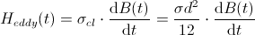

DynamicHysteresisDynamic Hysteresis (Eddy Currents) |
|
Information
This information is part of the Modelica Standard Library maintained by the Modelica Association.
Dynamic Hysteresis (Eddy Currents)
Some of the hysteresis flux tubes elements of the package HysteresisAndMagnets are capable of simulating eddy currents (dynamic hysteresis) additional to the static hysteresis behavior of the core material. The computation of eddy currents can be activated via the switch includeEddyCurrents in the "LossesAndHeat" tab of the corresponding elements parameter dialog. The total magnetic field strength H of the element is the sum of the ferromagnetic portion Hstat and the eddy current portion Heddy:
The eddy current portion of the magnetic field strength is the product of the classical eddy current factor (σcl) [BE01,Te98] and the time derivative of the magnetic flux density B(t):
|  |
Where σ is the electrical conductivity and d the thickness of the used electric steel sheets. Fig. 1 shows the decomposition of an exemplary dynamic hysteresis in its static and eddy current portion.
The following two figures show a comparison between measured and simulated dynamic hysteresis at several frequencies. The measurements were performed with a 25 cm Epstein frame according to DIN EN 60404-2. The magnetic core was made up of four layers of M330-50A steel sheet. The primary Winding of the used Epstein frame had 720 turns. The primary voltage was adjusted so that the magnetic excitation was about Hmax = 400 A/m, but 72 V in maximum. The simulation results (see Fig. 3) were generated with a simple model of this setup using the GenericHystTellinenTable hysteresis flux tube element for modeling the magnetic core.